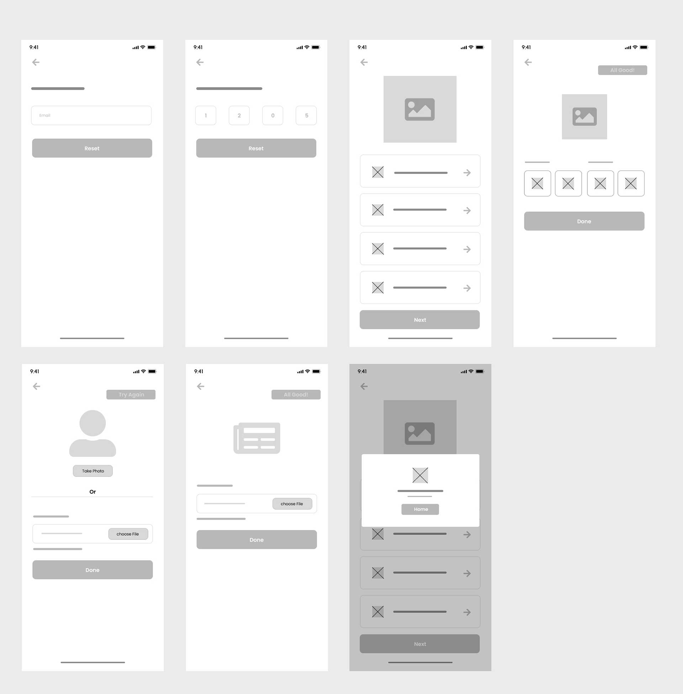
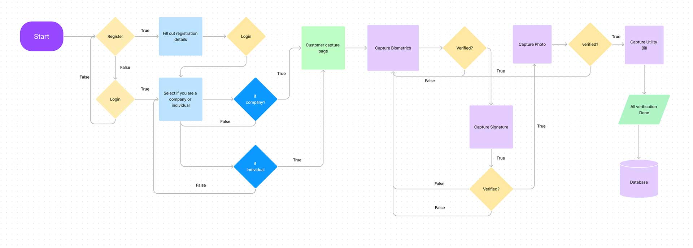
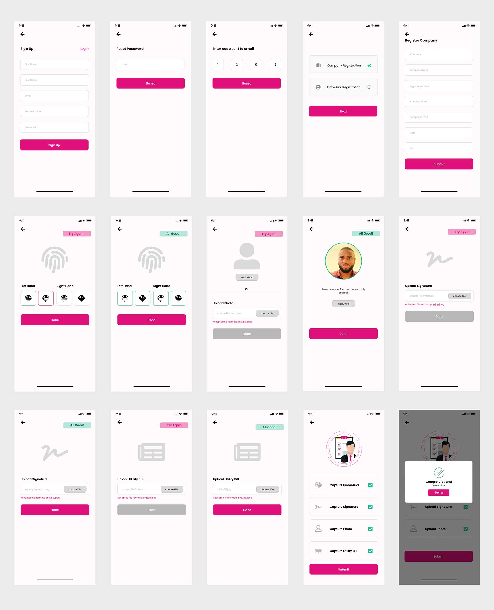
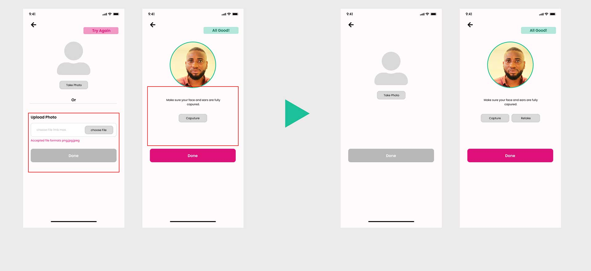

This application was designed to enable a telecommunications company here in Nigeria capture users details and have them saved on a database for verification purpose.
We conducted a research and got feedbacks on pain points users
experienced. With these, we were able to identify the problem and
tailor down solutions. The application was tested cross users in
different locations, adopting the unmoderated usability study
approach. This was done with the prototyped high fidelity of the
application and feedbacks were accessed to understand the themes and
patterns across these users, grouping them with the help of an
affinity diagram after which we iterated. This research was to figure
out the following:
- To make it easy for users to
seamlessly get verified on the platform,
- They want
to be able to see the incomplete and completed process of the
verification in one place as against a progress bar that makes them
feel there was a lot to do.
The research phase equipped us
properly with the necessary information needed to produce wireframes,
low-fi mockups to get feedback very early in the design phase. The
insights, interviews, and solutions are included in this study.
These early-stage wireframes pointed the team in the right direction. We got early feedback by conducting a usability test on the wireframes. We used the information from the testing to develop user flows for this application.
Some of the feedback we got from testing the wireframes were very useful to the team. I have highlighted some of them below.
The feedback helped us develop the user flow for various categories of users
The app designed feature will reduce the amount of time spent on queues in verification centers and as there will be more verified agents since it now runs on an android device.
This was a possible security problem that was observed during usability test with the high fidelity prototype. This problem was allowing users to capture or upload images which was iterated to live capture alone.
As at the time of documenting this writeup, the re-design is in the deployment phase. All design iterations and improvement were done and handed over to the development team successfully.
If you like what you see and want to work together, get in touch!
ekwealortobechukwu22@gmail.com